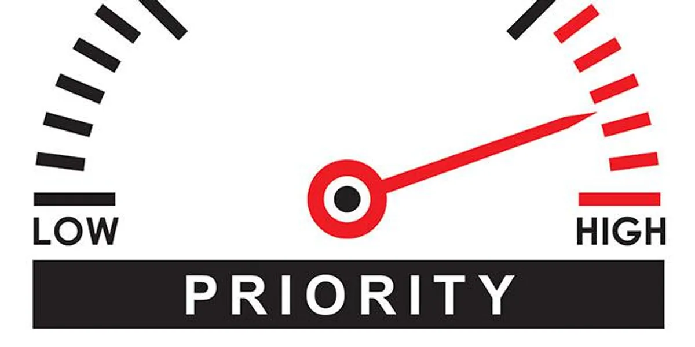
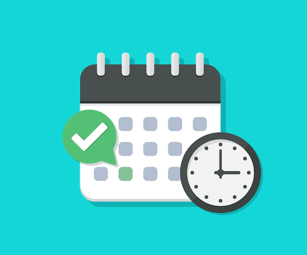

We Organize Your Tasks
Do you often feel overwhelmed by the amount of work you have to do? Do you find yourself missing deadlines? Or do you sometimes just forget to do something important, so that people have to chase you to get work done? All of these are symptoms of not keeping a proper "To-Do List." These are prioritized lists of all the tasks that you need to carry out. They list everything that you have to do, with the most important tasks at the top of the list, and the least important tasks at the bottom. By keeping such a list, you make sure that your tasks are written down all in one place so you don't forget anything important. And by prioritizing tasks, you plan the order in which you'll do them, so that you can tell what needs your immediate attention, and what you can leave until later. To-do lists are essential if you're going to beat work overload. When you don't use them effectively, you'll appear unfocused and unreliable to the people around you.
Manage Your Time
Prioritize Your Task
Complete Your Task
